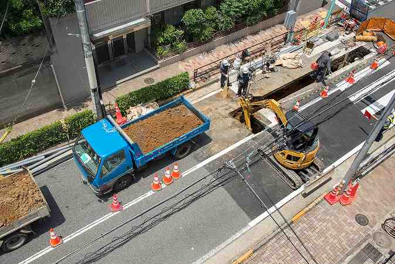
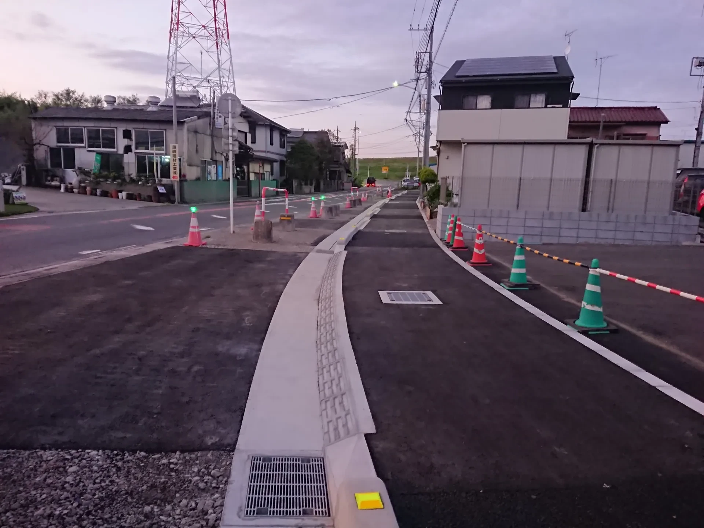
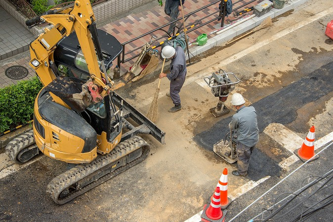

Our Work
仕事を知る
Our Works
5つの工事を、やさしく紹介。
はじめは名前を覚えるだけで大丈夫。どの工事も、ベテランと一緒に経験しながら覚えていきます。

水道引込工事
道路の下の水道管（配水管）から分かれて、敷地の中まで水道管を引き込む工事です。新しい家やお店に「水が出る」ようにする、最初の一歩です。

水道凍結断水工事
水道管の一部を凍らせて水を止め、その間に工事をする方法です。まわりの家を長い時間断水させずにすむ、技術のいる工事です。
下水公共ます新設
家から出た排水を、道路の下の下水道管へ流すための「ます」を新しく設置する工事です。
敷地内下水切回し
建て替えや増改築にあわせて、敷地の中の下水管のルートをつなぎ直す工事です。

舗装工事
セメコン（セメントコンクリート）・アスファルト・インターロッキングで、道路や駐車場、敷地を仕上げます。工事の跡をきれいに整えるのも大切な仕事です。
Field Stories
現場紹介
これまでの現場を「どんな現場で、何人で、何日かかったか」の形で紹介していきます。最新の現場はブログの現場日誌でもご覧いただけます。

水道引込工事の現場
道路の配水管から敷地内まで。掘削・配管・埋め戻し・舗装の復旧までをチームで行いました。
下水切回しの現場
敷地の中の下水管をつなぎ直し、公共ますへ。住んでいる方の生活に配慮しながら進めました。

舗装工事の現場
下地づくりからブロックの敷き込みまで。仕上がりの美しさが目に見える現場です。
A Day at Work
ある日の、仕事の流れ
現場は東京23区内が中心。チームで動くので、はじめての方もひとりになることはありません。
- 朝
会社に集合・段取りの確認
その日の現場と作業内容を確認し、道具と材料を車に積み込みます。
- 移動
車で現場へ
23区内の現場へ、チームで向かいます。
- 午前
安全確認・作業開始
まわりの安全を確保してから作業スタート。掘削や配管など、ベテランの指示で進めます。
- 昼
休憩
しっかり休んで、午後に備えます。
- 午後
施工・仕上げ
埋め戻しや舗装の復旧など、仕上げまで。できることを少しずつ増やしていきます。
- 夕方
片付け・帰社
現場をきれいに片付けて帰社。翌日の準備をして終了です。
Growth Steps
未経験から、職人へ。
いきなり全部はできなくて大丈夫。段階をふんで、ひとつずつ「できる」を増やしていきます。
道具と段取りを覚える
道具の名前と使い方、材料の運搬、現場の片付け。まずは現場の流れに慣れるところから。
作業の一部をまかされる
掘削や配管、舗装の作業を、ベテランのそばで少しずつ担当していきます。
作業の中心になる
現場の段取りがわかり、チームの中心として動けるように。後輩に教える立場にもなります。
資格にチャレンジ
給水装置工事主任技術者・排水設備工事責任技術者・施工管理技士など。資格を持つ先輩がいるので、相談しながらめざせます。